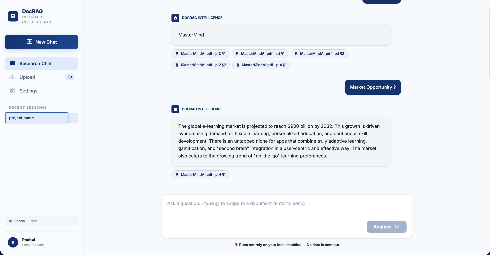
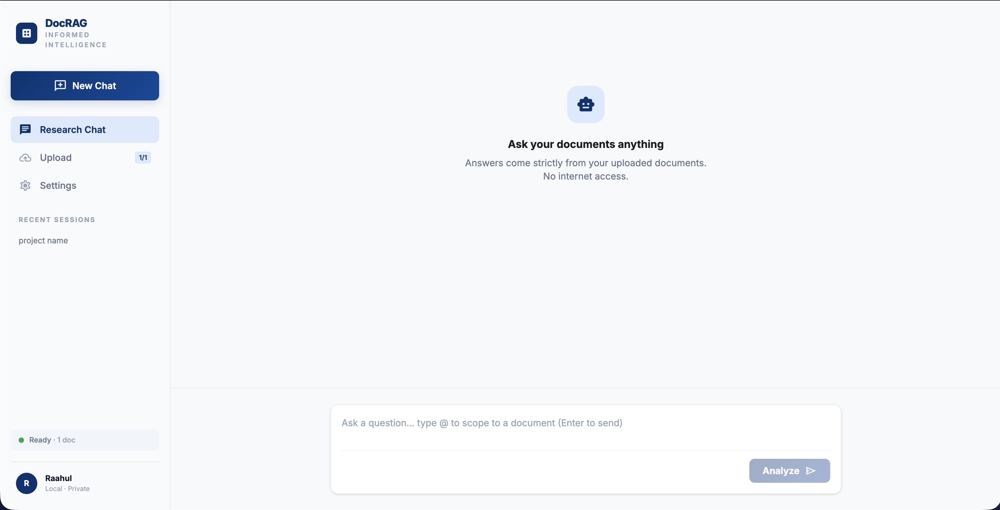
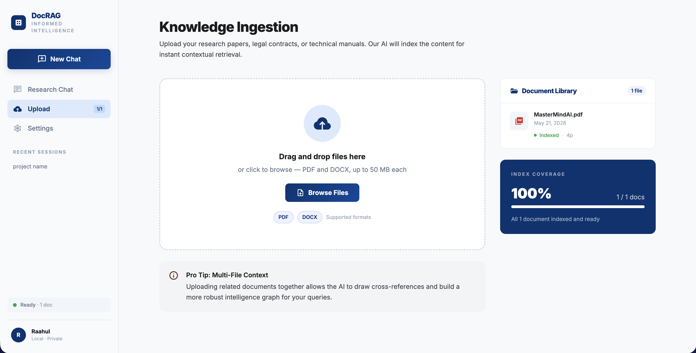
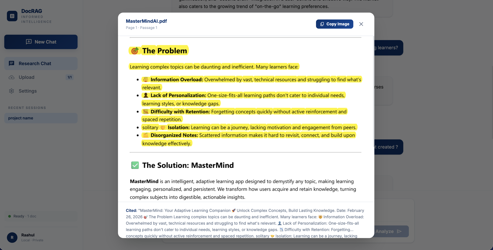

Control & Systems Engineering
Stop searching through hundreds of pages of codebooks, control specs, and standards. Ask in plain English — get precise answers in seconds. Fully offline. Your data never leaves your system.

Plant-side engineers deal with massive documentation every day. The old way is slow, error-prone and frustrating.
Document RAG is an AI assistant trained only on the documents you upload. It understands your specific codebooks, control specs, and standards — nothing else.
Real scenarios where Document RAG saves time during machine installation and commissioning.
Four steps — and you're getting answers from your own documents in seconds.
Designed to be picked up immediately by any engineer — no onboarding, no manual, no technical knowledge required.



No technical background needed. If you can install an app, you can install Document RAG.
Download and install Docker Desktop for Windows from the Docker website. It's a free application — takes about 5 minutes.
Launch Docker Desktop from your Start menu and wait for it to fully load (the whale icon in the taskbar should be steady).
Click the search bar at the top and type rp1901/document-rag-app then press Enter and click Pull.
Go to the Images tab, find the image, click Run. In the popup set Host Port to 8000 and click Run.
Open any browser and go to http://localhost:8000 — the app loads and is ready to use.
The first time you start the container, it will automatically download the AI model (~2.5GB). This takes a few minutes depending on your connection. Every start after that is instant.